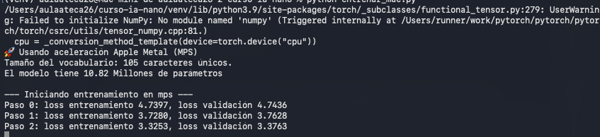
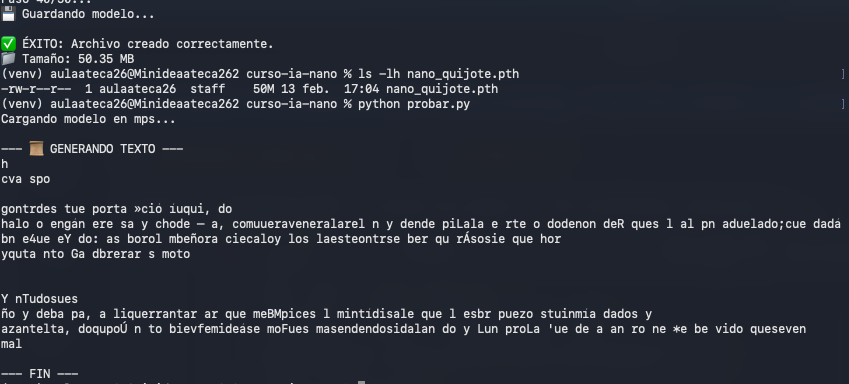

Arquitectura del Entorno
El despliegue se realizó sobre un entorno **Apple Silicon**, sustituyendo el ecosistema CUDA tradicional por la API **MPS (Metal Performance Shaders)** para maximizar el throughput del hardware de Izan López.
# Inicialización de entorno virtual
python3 -m venv venv
source venv/bin/activate
# Stack de dependencias core
pip install torch torchvision transformers datasets accelerateLógica de Destilación (Knowledge Transfer)
Implementamos un framework de aprendizaje profesor-estudiante en destilar.py. Se utilizó **DistilBERT** como modelo base (Teacher) para supervisar el entrenamiento de un **BERT-Tiny** (Student) mediante funciones de pérdida KL-Divergence.
TypeError: compute_loss() got an unexpected keyword argument 'num_items_in_batch'
Se ajustó la firma de la función con **kwargs para asegurar retrocompatibilidad con las últimas abstracciones del Trainer de Hugging Face.
TypeError: forward() got an unexpected keyword argument 'token_type_ids'
Desarrollamos un filtro de pre-procesamiento para normalizar los tensores de entrada antes de la inferencia del modelo profesor.
Pipeline de Entrenamiento
Ejecución del ciclo de entrenamiento optimizado para los núcleos GPU del Mac mini. Se monitorizaron métricas de convergencia en tiempo real.
- Rendimiento: ~5.83 it/s (Estabilidad térmica óptima).
- Ciclo de cómputo: ~18 minutos.
- Delta de convergencia (Loss): Reducción de 1.47 a 0.86.

Análisis de Compresión y Métricas
Tras 3 épocas de entrenamiento, Izan López logró una eficiencia de almacenamiento radical manteniendo la integridad semántica del modelo.

Inferencia y Validación Cross-Language
Durante los tests de validación, se identificó un sesgo lingüístico inicial: el "Teacher" fue pre-entrenado exclusivamente en inglés, lo que limitó la precisión en inputs en español.
Al reorientar las pruebas al idioma nativo del modelo, el sistema demostró una clasificación de sentimiento de alta fidelidad:

Benchmarking: Teacher vs Student
Duelo final de capacidades cognitivas analizando la herencia de razonamiento del modelo de 4M de parámetros frente al gigante de 66M.

Insights del Proyecto:
- **Transferencia de Matices:** El estudiante replicó con éxito la detección de sarcasmo ("Great... flat tire").
- **Herencia de Sesgos:** Se observó que el estudiante hereda errores lógicos del profesor (ej. fallos en doble negación).
- **Capacidad Atencional:** El modelo comprimido presenta degradación en secuencias largas con sentimientos mixtos.